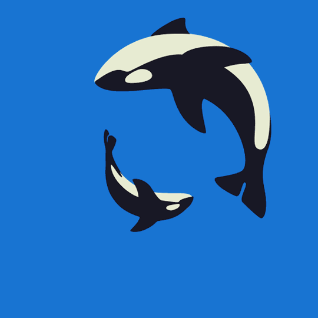

Click on a description below to be linked to a video preview of my projects!
My collaboration with Molly MacLaren on "Health Kick", an app created on Thunkable that determines how healthy you are by a quiz, has a BMI calculator, and has a timer for a short exercise.
My collaboration with Gregory Quach on "Senior Ditch Day", a Choose Your Own Adventure that revolves around Senior Ditch Day!
My collaboration with Trevor Johnson on encrypting and decrypting Caesar and Substitution Ciphers!
My collaboration with Saara Kriplani on "Turt Blurts!", a game created on Trinket on Pygame about raising environmental awareness regarding marine life!
